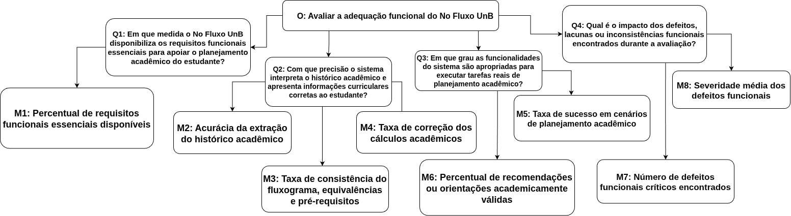

2. Objetivo de Medição - Adequação Funcional
Esta página especifica o objetivo de medição da característica Adequação Funcional do No Fluxo UnB, seguindo a abordagem GQM (Goal, Question, Metric). A especificação deriva diretamente da Fase 1, em que Adequação Funcional foi priorizada com maior pontuação na matriz Impacto × Risco por estar relacionada ao núcleo do produto: interpretar corretamente o histórico acadêmico do estudante, cruzar esses dados com o fluxograma curricular e apoiar o planejamento da graduação.
De acordo com a ISO/IEC 25010, a Adequação Funcional envolve a capacidade de um produto prover funções que atendam às necessidades declaradas e implícitas dos usuários. No contexto do No Fluxo UnB, esta característica é analisada pelas subcaracterísticas Completude Funcional, Correção Funcional e Pertinência Funcional.
2.1 Objetivo de Medição
Tabela 1: Objetivo de medição para Adequação Funcional.
| Elemento GQM | Definição para o No Fluxo UnB |
|---|---|
| Analisar | O sistema No Fluxo UnB, com foco no motor de leitura e processamento do histórico acadêmico em PDF, na visualização do fluxograma curricular, nos cálculos acadêmicos, na simulação de planejamento e nas funcionalidades de apoio ao estudante. |
| Com o propósito de | Avaliar se os requisitos funcionais essenciais estão presentes, operam corretamente e são apropriados para apoiar o planejamento acadêmico de estudantes da Universidade de Brasília. |
| Com respeito a | Adequação Funcional, considerando Completude Funcional, Correção Funcional e Pertinência Funcional, conforme a ISO/IEC 25010. |
| Do ponto de vista de | Estudantes de graduação da UnB, equipe avaliadora do Grupo Hedy Lamarr e equipe de desenvolvimento do No Fluxo UnB. |
| No contexto de | Avaliação acadêmica de qualidade de produto de software na disciplina FGA0315 - Qualidade de Software 1, com base no sistema disponível em https://no-fluxo.crianex.com/ e nos objetos de avaliação definidos na Fase 1. |
Fonte: Elaborado pelo Grupo Hedy Lamarr (2026), com base na abordagem GQM e na ISO/IEC 25010.
2.2 Folha de Abstração
A folha de abstração explicita como o objetivo será interpretado antes da coleta dos dados. Ela reduz ambiguidades entre o que será medido, por que será medido e como os resultados serão julgados.
Tabela 2: Folha de abstração do objetivo de Adequação Funcional.
| Campo | Descrição |
|---|---|
| Objeto | Produto de software No Fluxo UnB, especialmente os módulos de leitura do histórico, processamento acadêmico, visualização do fluxograma, simulação de planejamento, exportação e apoio por assistente de IA. |
| Propósito | Avaliar a capacidade do sistema de entregar as funções esperadas para apoiar o planejamento acadêmico. |
| Foco da qualidade | Adequação Funcional: completude, correção e pertinência das funções. |
| Ponto de vista | Usuário final estudante, avaliadores de qualidade e equipe mantenedora do produto. |
| Contexto de uso | Estudantes da UnB acessando a aplicação web para interpretar histórico acadêmico, consultar fluxograma, verificar progresso e planejar disciplinas. |
| Hipótese global | Se o sistema apresentar alta cobertura de funções essenciais, acurácia mínima de 95% na leitura do histórico e baixa ocorrência de defeitos críticos, então a Adequação Funcional será considerada suficiente para apoiar decisões acadêmicas com confiança. |
| Fatores de variação | Curso avaliado, formato do histórico em PDF, versão da base curricular, navegador utilizado, disponibilidade dos serviços externos e estado da autenticação do usuário. |
| Restrições da avaliação | A avaliação não pretende validar todos os cursos, todos os modelos possíveis de histórico nem todos os cenários de exceção da UnB. O escopo fica limitado aos objetos e ambientes definidos na Fase 1. |
Fonte: Elaborado pelo Grupo Hedy Lamarr (2026).
2.3 Rastreabilidade com a Fase 1
A Tabela 3 apresenta a relação direta entre as decisões tomadas na Fase 1 e o desdobramento deste objetivo GQM.
Tabela 3: Rastreabilidade entre Fase 1 e objetivo de Adequação Funcional.
| Definição da Fase 1 | Relação com este objetivo GQM |
|---|---|
| Adequação Funcional foi a característica de maior prioridade na matriz Impacto × Risco, com 25 pontos. | O objetivo de medição verifica se as funções centrais estão completas, corretas e úteis para o estudante. |
| O propósito da avaliação é apoiar decisões técnicas e de evolução do No Fluxo UnB. | As métricas foram definidas para produzir evidências acionáveis sobre falhas funcionais, lacunas e riscos de uso. |
| O motor de leitura do histórico em PDF foi identificado como núcleo funcional do sistema. | A métrica M2 mede a acurácia da extração do histórico, com limite mínimo alinhado à exigência de 95% mencionada na Fase 1. |
| A visualização do fluxograma e o apoio ao planejamento acadêmico foram definidos como funções centrais. | As métricas M3, M4, M5 e M6 avaliam consistência curricular, cálculos acadêmicos e conclusão de tarefas de planejamento. |
| O público-alvo principal são estudantes de graduação da UnB. | As questões avaliam se o sistema entrega valor funcional do ponto de vista do estudante que precisa planejar sua trajetória acadêmica. |
Fonte: Elaborado pelo Grupo Hedy Lamarr (2026).
2.4 Questões e Hipóteses
As questões foram formuladas para cobrir as três subcaracterísticas de Adequação Funcional presentes na ISO/IEC 25010. Cada questão possui uma hipótese associada, que será confrontada com os resultados obtidos na execução da avaliação.
Tabela 4: Questões e hipóteses do objetivo de Adequação Funcional.
| Código | Questão | Subcaracterística | Hipótese |
|---|---|---|---|
| Q1 | Em que medida o No Fluxo UnB disponibiliza os requisitos funcionais essenciais para apoiar o planejamento acadêmico do estudante? | Completude Funcional | H1: O sistema disponibiliza pelo menos 90% dos requisitos funcionais essenciais identificados na Fase 1 e no levantamento de requisitos do produto. |
| Q2 | Com que precisão o sistema interpreta o histórico acadêmico e apresenta informações curriculares corretas ao estudante? | Correção Funcional | H2: A leitura do histórico e a apresentação dos dados curriculares atingem acurácia igual ou superior a 95%, sem defeitos críticos que comprometam a decisão acadêmica. |
| Q3 | Em que grau as funcionalidades do sistema são apropriadas para executar tarefas reais de planejamento acadêmico? | Pertinência Funcional | H3: Os cenários principais de planejamento podem ser concluídos com sucesso em pelo menos 90% das execuções avaliadas. |
| Q4 | Qual é o impacto dos defeitos, lacunas ou inconsistências funcionais encontrados durante a avaliação? | Adequação Funcional consolidada | H4: Os defeitos funcionais encontrados terão severidade média baixa ou moderada, sem ocorrência de mais de um defeito crítico. |
Fonte: Elaborado pelo Grupo Hedy Lamarr (2026).
2.5 Métricas Selecionadas
As métricas abaixo respondem diretamente às questões da Seção 2.4. Foram priorizadas métricas simples, objetivas e verificáveis, com fórmulas explícitas e fontes de evidência auditáveis.
Tabela 5: Métricas do objetivo de Adequação Funcional.
| Código | Questão | Métrica | Tipo | Fórmula / forma de medição | Fonte de evidência |
|---|---|---|---|---|---|
| M1 | Q1 | Percentual de requisitos funcionais essenciais disponíveis | Quantitativa | (Nº de requisitos funcionais essenciais disponíveis e acessíveis / Nº total de requisitos funcionais essenciais definidos na Tabela 6) × 100 |
Checklist funcional derivado de documentacao/requisitos.md e execução exploratória da aplicação. |
| M2 | Q2 | Acurácia da extração do histórico acadêmico | Quantitativa | (Nº de informações do histórico extraídas corretamente / Nº total de informações esperadas no histórico de referência) × 100 |
Históricos em PDF e textos extraídos de test_historicos/, dados extraídos pelo sistema e conferência com valores esperados dos scripts de teste. |
| M3 | Q2 | Taxa de consistência do fluxograma, equivalências e pré-requisitos | Quantitativa | (Nº de disciplinas, equivalências, dependências e pré-requisitos exibidos corretamente / Nº total de itens curriculares verificados) × 100 |
Base curricular, consultas de matrizes/disciplinas/equivalências, tela gerada pelo No Fluxo UnB e registros de verificação. |
| M4 | Q2 | Taxa de correção dos cálculos acadêmicos | Quantitativa | (Nº de indicadores acadêmicos calculados corretamente / Nº total de indicadores acadêmicos verificados) × 100 |
Valores esperados de curso, IRA, média ponderada, suspensões, pendências, integralização e progresso, conferidos com histórico e base curricular. |
| M5 | Q3 | Taxa de sucesso em cenários de planejamento acadêmico | Quantitativa | (Nº de cenários concluídos sem impedimento funcional / Nº total de cenários executados) × 100 |
Roteiros de teste, evidências de execução, registros de sucesso e falha. |
| M6 | Q3 | Percentual de recomendações ou orientações academicamente válidas | Quantitativa | (Nº de recomendações válidas / Nº total de recomendações avaliadas) × 100 |
Respostas do assistente de IA, histórico de referência, ementas ou informações curriculares disponíveis e regras acadêmicas aplicáveis. |
| M7 | Q4 | Número de defeitos funcionais críticos encontrados | Quantitativa | Contagem de defeitos classificados como críticos, isto é, defeitos capazes de induzir uma decisão acadêmica incorreta ou impedir o uso de uma função central. | Registro de defeitos, evidências de reprodução e classificação de severidade. |
| M8 | Q4 | Severidade média dos defeitos funcionais | Quantitativa ordinal | Soma das severidades atribuídas aos defeitos / Nº total de defeitos funcionais encontrados, em escala de 1 a 5. |
Registro de defeitos funcionais e escala de severidade definida nesta página. |
Fonte: Elaborado pelo Grupo Hedy Lamarr (2026).
Diagrama

Legenda: O: Objetivo, Q: Questão e M: Métrica relacionada.
2.5.1 Requisitos Funcionais Essenciais Esperados
Para a métrica M1, o conjunto de requisitos funcionais essenciais foi definido com base na descrição do produto da Fase 1 e no arquivo documentacao/requisitos.md do repositório de referência do No Fluxo UnB.
Tabela 6: Requisitos funcionais essenciais considerados na métrica M1.
| Código | Requisito funcional essencial | Justificativa |
|---|---|---|
| F1 | Upload e leitura de histórico acadêmico em PDF | É a entrada principal para personalizar a análise do estudante. |
| F2 | Extração de disciplinas cursadas, aprovadas e reprovadas | Permite identificar o estado acadêmico real do usuário. |
| F3 | Consulta ao banco de dados de fluxograma, disciplinas e equivalências | Conecta o histórico do estudante à matriz curricular oficial usada pela plataforma. |
| F4 | Visualização do fluxograma curricular do curso com disciplinas cursadas destacadas | É a entrega visual central da plataforma. |
| F5 | Exibição de equivalências e dependências curriculares | Apoia a escolha correta de disciplinas futuras. |
| F6 | Indicação de número de reprovações ou tentativas por disciplina | Ajuda o estudante a compreender seu percurso no curso. |
| F7 | Cálculo de progresso acadêmico, IRA, média ponderada e carga horária | Permite acompanhar a situação acadêmica de forma objetiva. |
| F8 | Identificação de horas complementares cumpridas e pendentes | Evita planejamento incompleto em relação à integralização curricular. |
| F9 | Planejamento ou simulação de disciplinas futuras | Relaciona diretamente o sistema ao planejamento acadêmico personalizado. |
| F10 | Exportação em PDF da simulação do fluxograma | Permite registrar e compartilhar o planejamento em formato padronizado. |
| F11 | Simulação de troca de curso e aproveitamento de disciplinas | Atende cenário de decisão acadêmica relevante. |
| F12 | Persistência de dados e simulações para usuário logado | Permite continuidade de uso e comparação de planejamentos. |
| F13 | Cálculo de semestres cursados e restantes | Ajuda o estudante a estimar sua trajetória até a conclusão. |
| F14 | Identificação de trancamentos e mudanças de curso no histórico | Evita interpretação incompleta do percurso acadêmico. |
| F15 | Assistente de IA para apoio à escolha de cursos e disciplinas | Complementa a tomada de decisão com recomendações alinhadas a interesses, histórico e matriz curricular. |
Fonte: Elaborado pelo Grupo Hedy Lamarr (2026), com base na descrição do produto e em documentacao/requisitos.md do No Fluxo UnB.
Referências
BASILI, Victor R.; CALDIERA, Gianluigi; ROMBACH, H. Dieter. Goal Question Metric Paradigm. In: MARCINIAK, John J. (Ed.). Encyclopedia of Software Engineering. New York: John Wiley & Sons, 1994.
INTERNATIONAL ORGANIZATION FOR STANDARDIZATION. ISO/IEC 25010:2011 - Systems and software engineering - Systems and software Quality Requirements and Evaluation (SQuaRE) - System and software quality models. Geneva: ISO, 2011.
NO FLUXO UNB. No Fluxo UnB. Disponível em: https://no-fluxo.crianex.com/. Acesso em: 03 jun. 2026.
NO FLUXO UNB. Levantamento de Requisitos. Repositório público do No Fluxo UnB. Disponível em: https://github.com/unb-mds/2025-1-NoFluxoUNB/blob/main/documentacao/requisitos.md. Acesso em: 03 jun. 2026.
FCTE QUALIDADE DE SOFTWARE 1. 2025-2 T01 Heddy Lamar - Objetivo de Medição: Adequação Funcional. Disponível em: https://fcte-qualidade-de-software-1.github.io/2025-2_T01_HEDDY-LAMAR/fase_2/obj_adequacao_funcional/. Acesso em: 03 jun. 2026.
FCTE QUALIDADE DE SOFTWARE 1. 2025-2 T02 Radia Perlman - Característica: Adequação Funcional. Disponível em: https://fcte-qualidade-de-software-1.github.io/2025-2_T02_Radia_Perlman/fase2/02_adequacao_funcional/. Acesso em: 03 jun. 2026.
Histórico de Versões
Tabela 7: Histórico de versões da página.
| Versão | Data | Descrição | Autor | Revisor |
|---|---|---|---|---|
1.2 |
03/06/2026 | Criação da Representação visual do GQM de Adequação Funcional | Paulo Cerqueira | Grupo Hedy Lamarr |
1.1 |
03/06/2026 | Refinamento com base no levantamento de requisitos do No Fluxo UnB, nos testes de histórico disponíveis no repositório e na definição de evidências auditáveis por métrica. | Lucas Guimarães | Grupo Hedy Lamarr |
1.0 |
03/06/2026 | Criação do objetivo de medição de Adequação Funcional, com objetivo GQM, folha de abstração, rastreabilidade com a Fase 1, questões, hipóteses | Gabriel Lopes | Grupo Hedy Lamarr |
Fonte: Elaborado pelo Grupo Hedy Lamarr (2026).